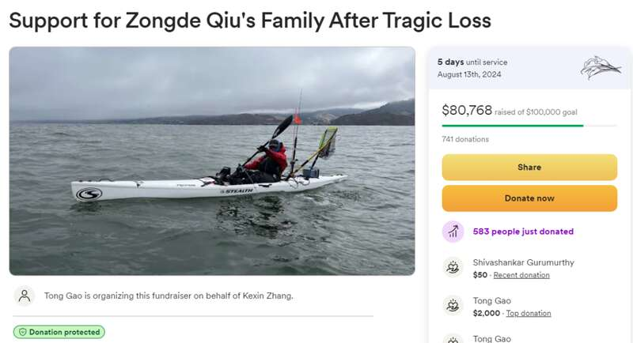

太难受了….8月3日，一名湾区华裔工程师在Pacifica附近的皮划艇事故中丧生。官方已确认遇难者的身份为45岁Cupertino居民，Zongde Qiu，毕业于北京清华大学，目前正在硅谷担任工程师。据悉，Qiu为了缓解平日紧张的工作，经常划皮划艇出海钓鱼解压，但每次都做好万全准备，非常谨慎。周六，Qiu在太平洋海岸附近海域乘坐皮划艇钓鱼，但从皮划艇上摔了下来。跌到海里后，因“某种未知原因”无法回到皮划艇上。
图片来源于sfgate，版权归属原作者所有
后来，他被冲浪者发现，但此刻一切都太迟了，紧急送院后，医护宣布抢救无效，留下了Qiu的妻子和2个女儿。据好友描述，Qiu非常乐于助人，经常帮助皮划艇爱好者团队里的其他小伙伴，并且为培养自己的清华大学感到自豪。他也非常忠诚顾家，时常为陪伴女儿和妻子取消原定的皮划艇行程。

图片来源于gofundme，版权归属原作者所有
作为家里唯一的经济来源，他的意外去世，让家庭财务陷入混乱。现在Qiu的朋友们正在发起筹款页面，期望能帮助支付丧葬费以及短期内必需的费用。
Advertisements